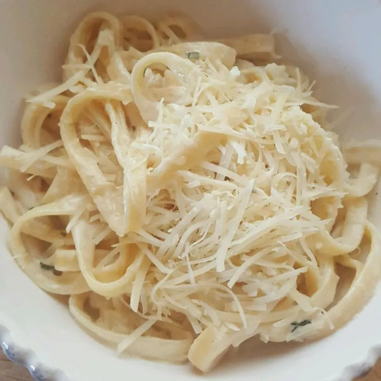

How to Make Fettucini Alfredo

This is the only Fettucini Alfredo recipe you will ever need. It is incredibly creamy and succulent. It will only take you 20 minutes to cook.
- 10 ounces of fettucini pasta
- 1/2 cup of butter
- 5 cloves of chopped garlic
- 1 cup heavy cream
- 1 egg yolk
- 2 cups freshly grated parmesan
- 2 tablespoons dried parsley
Instructions
- Bring a large pot of lightly salted water to a boil. Add pasta and cook for 8 to 10 minutes or until al dente; drain
- Meanwhile, in a large skillet melt butter and add chopped garlic. Cook on low for about 5 minutes, stirring often to prevent garlic from burning.
- Pour about a 1/4 cup of heavy cream into a small bowl. Add egg yolk and beat together; set aside.
- Pour remaining cream into the skillet. Increase heat to medium-high. As cream starts to boil, mix rapidly using a whisk. Add egg mixture slowly to prevent curdling, whisking until well blended. Stir in 1 cup Parmesan cheese until combined.
- Add remaining Parmesan cheese and parsley; mix until smooth. Remove from heat and serve over cooked pasta.
Return to the Main page
Previous
Next